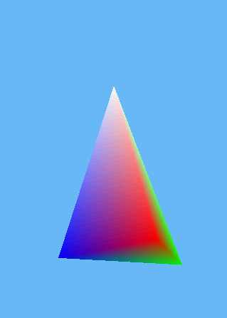
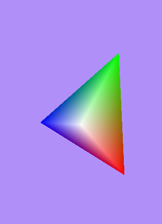

Android 3D OpenGL开发之三 ―漂亮的金字塔
一、OpenGL面可见原理
在OpenGL中，有一个概念叫做弯曲（winding），意思是vertices绘制时的顺序。与现实世界中的对象不同，OpenGL中的多边形一般没有两个面。他们只有一个面，一般是正面，一个三角形只有当其正面面对观察者的时候才可以被看到。可以配置OpenGL将一个多边形作为两面的，但是默认情况下三角形只有一个可见的面。知道了那边是多边形的正面以后，OpenGL就可以少做一半的计算量。如果设置两面都可视，则需要多的计算。
虽然有时候一个多边形会独立地显示，但是你或许不是非常需要它的背面显示，经常一个三角形是一个更大的对象的一部分，多边形的一面将在这个物体的内部，所以永远也不会被看到。这个没有被显示的一面被称作背面，OpenGl通过绘制的顺序来确定那个面是正面哪个是背面。顶点按照逆时针绘制的是正面（默认是这样，但是可以被改变）。因为OpenGL能很容易地确定哪些三角形对用户是可视的，它就可以通过使用Backface Culling来避免为那些不显示在前面的多边形做无用功。我们将在下一篇文章里讨论视角的问题，但是你现在可以想象它为一个虚拟摄像机，或者通过一个虚拟的窗口来观察OpenGL的世界。
在上面的示意图中，左边青绿色的的三角形是背面，将不会被绘制，因为它相对于观察者来说是顺时针的。而在右边的这个三角形是正面，将会被绘制，因为绘制顶点的顺序相对于观察者来说是逆时针的。
二、金字塔
2.1、金字塔模型
2.2、金字塔的对象类Pyramid.java
import java.nio.ByteBuffer;import java.nio.ByteOrder;
import java.nio.FloatBuffer;
import java.nio.ShortBuffer;
public class Pyramid {
public Pyramid() {
initPyramid();
}
// 金字塔顶点的Buffer
private FloatBuffer vertexBuffer;
public FloatBuffer getVertexBuffer() {
return vertexBuffer;
}
public void setVertexBuffer(FloatBuffer vertexBuffer) {
this.vertexBuffer = vertexBuffer;
}
// 金字塔颜色数组的Buffer
private FloatBuffer colorBuffer;
public FloatBuffer getColorBuffer() {
return colorBuffer;
}
public void setColorBuffer(FloatBuffer colorBuffer) {
this.colorBuffer = colorBuffer;
}
// 金字塔索引值得Buffer
private ShortBuffer indexBuffer;
public ShortBuffer getIndexBuffer() {
return indexBuffer;
}
public void setIndexBuffer(ShortBuffer indexBuffer) {
this.indexBuffer = indexBuffer;
}
private int numberOfPoint = 4 * 3;
public int getNumberOfPoint() {
return numberOfPoint;
}
/**
* 初始化金字塔
*/
private void initPyramid() {
float[] coords = { -0.5f, -0.5f, 0.5f, // 0
0.5f, -0.5f, 0.5f, // 1
0f, -0.5f, -0.5f, // 2
0f, 0.5f, 0f, // 3
};
float[] colors = { 1f, 0f, 0f, 1f, // point 0 red
0f, 1f, 0f, 1f, // point 1 green
0f, 0f, 1f, 1f, // point 2 blue
1f, 1f, 1f, 1f, // point 3 white
};
short[] indicesArray = { 0, 1, 3, // rwg
0, 2, 1, // rbg
0, 3, 2, // rbw
1, 2, 3, // bwg
};
// float类型有四个字节，分配内存
ByteBuffer vbb = ByteBuffer.allocateDirect(coords.length * 4);
vbb.order(ByteOrder.nativeOrder());
vertexBuffer = vbb.asFloatBuffer();
// short类型有2个字节，分配内存
ByteBuffer ibb = ByteBuffer.allocateDirect(indicesArray.length * 2);
ibb.order(ByteOrder.nativeOrder());
indexBuffer = ibb.asShortBuffer();
ByteBuffer cbb = ByteBuffer.allocateDirect(colors.length * 4);
cbb.order(ByteOrder.nativeOrder());
colorBuffer = cbb.asFloatBuffer();
vertexBuffer.put(coords);
indexBuffer.put(indicesArray);
colorBuffer.put(colors);
vertexBuffer.position(0);
indexBuffer.position(0);
colorBuffer.position(0);
}
}
三、视角声明
//让每个不同的面都可见gl.glEnable(GL10.GL_CULL_FACE);
//逆时针方向的面为前面，前面就被画出来
gl.glFrontFace(GL10.GL_CCW);
//gl.glFrontFace(GL10.GL_CW);
//后面就不需要被画出来
gl.glCullFace(GL10.GL_BACK);
将这三条语句放在onSurfaceCreated函数里面，就可以设置好这个视角，然后所有的反向面都是可见的，然后顺时针方向绘成的面都不可见。
3.1、VortexRenderer.java
因为VortexRenderer类有改动，所有就贴出所有的源码
import java.nio.ByteBuffer;import java.nio.ByteOrder;
import java.nio.FloatBuffer;
import java.nio.ShortBuffer;
import javax.microedition.khronos.egl.EGLConfig;
import javax.microedition.khronos.opengles.GL10;
import android.opengl.GLSurfaceView;
public class VortexRenderer implements GLSurfaceView.Renderer {
private static final String LOG = VortexRenderer.class.getSimpleName();
private float red = 0.9f;
private float green = 0.2f;
private float blue = 0.2f;
private FloatBuffer colorBuffer;
@Override
public void onDrawFrame(GL10 gl) {
// 定义定点的颜色
gl.glClearColor(0f, 0f, 0f, 1.0f);
// 清除颜色的Buffer然后让现实上面我们通过glClearColor来定义的颜色
gl.glClear(GL10.GL_COLOR_BUFFER_BIT);
gl.glLoadIdentity();
gl.glRotatef(xAngle, 1f, 0f, 0f);
gl.glRotatef(yAngle, 0f, 1f, 0f);
/**
* 第一个参数是大小，也是顶点的维数。我们使用的是x,y,z三维坐标。 第二个参数，GL_FLOAT定义buffer中使用的数据类型。
* 第三个变量是0，是因为我们的坐标是在数组中紧凑的排列的，没有使用offset。 最后,第四个参数顶点缓冲。
*/
gl.glVertexPointer(3, GL10.GL_FLOAT, 0, vertexBuffer);
/**
* 参数4表示RGBA(RGBA刚好是四个值），其余的几个参数大家都比较熟悉了。
*/
gl.glColorPointer(4, GL10.GL_FLOAT, 0, colorBuffer);
/**
* 将所有这些元素画出来。第一个参数定义了什么样的图元将被画出来。 第二个参数定义有多少个元素， 第三个是indices使用的数据类型。
* 最后一个是绘制顶点使用的索引缓冲。
*/
gl.glDrawElements(GL10.GL_TRIANGLES, nrOfVertices * 3,
GL10.GL_UNSIGNED_SHORT, indexBuffer);
// gl.glColorPointer(4, GL10.GL_FLOAT, 0, colorBuffer);
// gl.glDrawElements(GL10.GL_TRIANGLE_FAN, nrOfVertices,
// GL10.GL_UNSIGNED_SHORT, indexBuffer);
}
@Override
public void onSurfaceChanged(GL10 gl, int width, int height) {
gl.glViewport(0, 0, width, height);
}
@Override
public void onSurfaceCreated(GL10 gl, EGLConfig config) {
// 让每个不同的面都可见
gl.glEnable(GL10.GL_CULL_FACE);
// 逆时针方向的面为前面，前面就被画出来
gl.glFrontFace(GL10.GL_CCW);
// gl.glFrontFace(GL10.GL_CW);
// 后面就不需要被画出来
gl.glCullFace(GL10.GL_BACK);
gl.glEnableClientState(GL10.GL_VERTEX_ARRAY);
gl.glEnableClientState(GL10.GL_COLOR_ARRAY);
initTriangle();
}
public void setColor(float r, float g, float b) {
red = r;
green = g;
blue = b;
}
// 保存索引
private ShortBuffer indexBuffer;
// 为三角形保存坐标
private FloatBuffer vertexBuffer;
// x需要多少个定点
private int nrOfVertices = 4;
// 初始化一个三角形
public void initTriangle() {
float[] coords = {
// -0.5f,-0.5f,0f,//x1,y1,z1
// 0.5f,0.5f,0f,//x2,y2,z2
// 0f,0.5f,0f //x3,y3,z3
-0.5f, -0.5f, 0.5f, // 0
0.5f, -0.5f, 0.5f, // 1
0f, -0.5f, -0.5f, // 2
0f, 0.5f, 0f, // 3
};
float[] colors = {
// 1f, 0f, 0f, 1f, // point 1
// 0f, 1f, 0f, 1f, // point 2
// 0f, 0f, 1f, 1f, // point 3
1f, 0f, 0f, 1f, // point 0 red
0f, 1f, 0f, 1f, // point 1 green
0f, 0f, 1f, 1f, // point 2 blue
1f, 1f, 1f, 1f, // point 3 white
};
short[] indicesArray = { 0, 1, 3, // rwg
0, 2, 1, // rbg
0, 3, 2, // rbw
1, 2, 3, // bwg
};
// float类型有四个字节，分配内存
ByteBuffer vbb = ByteBuffer.allocateDirect(coords.length * 4);
vbb.order(ByteOrder.nativeOrder());
vertexBuffer = vbb.asFloatBuffer();
// short类型有2个字节，分配内存
ByteBuffer ibb = ByteBuffer.allocateDirect(indicesArray.length * 2);
ibb.order(ByteOrder.nativeOrder());
indexBuffer = ibb.asShortBuffer();
ByteBuffer cbb = ByteBuffer.allocateDirect(colors.length * 4);
cbb.order(ByteOrder.nativeOrder());
colorBuffer = cbb.asFloatBuffer();
vertexBuffer.put(coords);
indexBuffer.put(indicesArray);
colorBuffer.put(colors);
vertexBuffer.position(0);
indexBuffer.position(0);
colorBuffer.position(0);
}
// x坐标旋转角度
private float xAngle = 0;
// y坐标旋转角度
private float yAngle = 0;
public void setXAngle(float x) {
xAngle = x;
}
public float getXAngle() {
return xAngle;
}
public void setYAngle(float y) {
yAngle = y;
}
public float getYAngle() {
return yAngle;
}
}
四、效果预览

